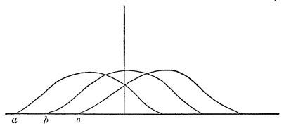
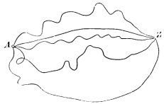

Chapter 11: The Stream of Consciousness¶
11.1 The Stream of Consciousness¶
The order of our study must be analytic. We are now prepared to begin the introspective study of the adult consciousness itself. Most books adopt the so-called synthetic method. Starting with 'simple ideas of sensation,' and regarding these as so many atoms, they proceed to build up the higher states of mind out of their 'association,' 'integration,' or 'fusion,' as houses are built by the agglutination of bricks. This has the didactic advantages which the synthetic method usually has. But it commits one beforehand to the very questionable theory that our higher states of consciousness are compounds of units; and instead of starting with what the reader directly knows, namely his total concrete states of mind, it starts with a set of supposed 'simple ideas' with which he has no immediate acquaintance at all, and concerning whose alleged interactions he is much at the mercy of any plausible phrase. On every ground, then, the method of advancing from the simple to the compound exposes us to illusion. All pedants and abstractionists will naturally hate to abandon it. But a student who loves the fulness of human nature will prefer to follow the 'analytic' method, and to begin with the most concrete facts, those with which he has a daily acquaintance in his own inner life. The analytic method will discover in due time the elementary parts, if such exist, without danger of precipitate assumption. The reader will bear in mind that our own chapters on sensation have dealt mainly with the physiological conditions thereof. They were put first as a mere matter of convenience, because incoming currents come first. Psychologically they might better have come last. Pure sensations were described on page 12 as processes which in adult life are well-nigh unknown, and nothing was said which could for a moment lead the reader to suppose that they were the elements of composition of the higher states of mind.
The Fundamental Fact.—The first and foremost concrete fact which every one will affirm to belong to his inner experience is the fact that consciousness of some sort goes on. 'States of mind' succeed each other in him. If we could say in English 'it thinks,' as we say 'it rains' or 'it blows,' we should be stating the fact most simply and with the minimum of assumption. As we cannot, we must simply say that thought goes on.
Four Characters in Consciousness.—How does it go on? We notice immediately four important characters in the process, of which it shall be the duty of the present chapter to treat in a general way:
1) Every 'state' tends to be part of a personal consciousness.
2) Within each personal consciousness states are always changing.
3) Each personal consciousness is sensibly continuous.
4) It is interested in some parts of its object to the exclusion of others, and welcomes or rejects—chooses from among them, in a word—all the while.
In considering these four points successively, we shall have to plunge in medias res as regards our nomenclature and use psychological terms which can only be adequately defined in later chapters of the book. But every one knows what the terms mean in a rough way; and it is only in a rough way that we are now to take them. This chapter is like a painter's first charcoal sketch upon his canvas, in which no niceties appear.
When I say every 'state' or 'thought' is part of a personal consciousness, 'personal consciousness' is one of the terms in question. Its meaning we know so long as no one asks us to define it, but to give an accurate account of it is the most difficult of philosophic tasks. This task we must confront in the next chapter; here a preliminary word will suffice.
In this room—this lecture-room, say—there are a multitude of thoughts, yours and mine, some of which cohere mutually, and some not. They are as little each-for-itself and reciprocally independent as they are all-belonging-together. They are neither: no one of them is separate, but each belongs with certain others and with none beside. My thought belongs with my other thoughts, and your thought with your other thoughts. Whether anywhere in the room there be a mere thought, which is nobody's thought, we have no means of ascertaining, for we have no experience of its like. The only states of consciousness that we naturally deal with are found in personal consciousnesses, minds, selves, concrete particular I's and you's.
Each of these minds keeps its own thoughts to itself. There is no giving or bartering between them. No thought even comes into direct sight of a thought in another personal consciousness than its own. Absolute insulation, irreducible pluralism, is the law. It seems as if the elementary psychic fact were not thought or this thought or that thought, but my thought, every thought being owned. Neither contemporaneity, nor proximity in space, nor similarity of quality and content are able to fuse thoughts together which are sundered by this barrier of belonging to different personal minds. The breaches between such thoughts are the most absolute breaches in nature. Every one will recognize this to be true, so long as the existence of something corresponding to the term 'personal mind' is all that is insisted on, without any particular view of its nature being implied. On these terms the personal self rather than the thought might be treated as the immediate datum in psychology. The universal conscious fact is not 'feelings and thoughts exist,' but 'I think' and 'I feel.' No psychology, at any rate, can question the existence of personal selves. Thoughts connected as we feel them to be connected are what we mean by personal selves. The worst a psychology can do is so to interpret the nature of these selves as to rob them of their worth.
Consciousness is in constant change. I do not mean by this to say that no one state of mind has any duration—even if true, that would be hard to establish. What I wish to lay stress on is this, that no state once gone can recur and be identical with what it was before. Now we are seeing, now hearing; now reasoning, now willing; now recollecting, now expecting; now loving, now hating; and in a hundred other ways we know our minds to be alternately engaged. But all these are complex states, it may be said, produced by combination of simpler ones;—do not the simpler ones follow a different law? Are not the sensations which we get from the same object, for example, always the same? Does not the same piano-key, struck with the same force, make us hear in the same way? Does not the same grass give us the same feeling of green, the same sky the same feeling of blue, and do we not get the same olfactory sensation no matter how many times we put our nose to the same flask of cologne? It seems a piece of metaphysical sophistry to suggest that we do not; and yet a close attention to the matter shows that there is no proof that an incoming current ever gives us just the same bodily sensation twice.
What is got twice is the same OBJECT. We hear the same note over and over again; we see the same quality of green, or smell the same objective perfume, or experience the same species of pain. The realities, concrete and abstract, physical and ideal, whose permanent existence we believe in, seem to be constantly coming up again before our thought, and lead us, in our carelessness, to suppose that our 'ideas' of them are the same ideas. When we come, some time later, to the chapter on Perception, we shall see how inveterate is our habit of simply using our sensible impressions as stepping-stones to pass over to the recognition of the realities whose presence they reveal. The grass out of the window now looks to me of the same green in the sun as in the shade, and yet a painter would have to paint one part of it dark brown, another part bright yellow, to give its real sensational effect. We take no heed, as a rule, of the different way in which the same things look and sound and smell at different distances and under different circumstances. The sameness of the things is what we are concerned to ascertain; and any sensations that assure us of that will probably be considered in a rough way to be the same with each other. This is what makes off-hand testimony about the subjective identity of different sensations well-nigh worthless as a proof of the fact. The entire history of what is called Sensation is a commentary on our inability to tell whether two sensible qualities received apart are exactly alike. What appeals to our attention far more than the absolute quality of an impression is its ratio to whatever other impressions we may have at the same time. When everything is dark a somewhat less dark sensation makes us see an object white. Helmholtz calculates that the white marble painted in a picture representing an architectural view by moonlight is, when seen by daylight, from ten to twenty thousand times brighter than the real moonlit marble would be.
Such a difference as this could never have been sensibly learned; it had to be inferred from a series of indirect considerations. These make us believe that our sensibility is altering all the time, so that the same object cannot easily give us the same sensation over again. We feel things differently accordingly as we are sleepy or awake, hungry or full, fresh or tired; differently at night and in the morning, differently in summer and in winter; and above all, differently in childhood, manhood, and old age. And yet we never doubt that our feelings reveal the same world, with the same sensible qualities and the same sensible things occupying it. The difference of the sensibility is shown best by the difference of our emotion about the things from one age to another, or when we are in different organic moods. What was bright and exciting becomes weary, flat, and unprofitable. The bird's song is tedious, the breeze is mournful, the sky is sad.
To these indirect presumptions that our sensations, following the mutations of our capacity for feeling, are always undergoing an essential change, must be added another presumption, based on what must happen in the brain. Every sensation corresponds to some cerebral action. For an identical sensation to recur it would have to occur the second time in an unmodified brain. But as this, strictly speaking, is a physiological impossibility, so is an unmodified feeling an impossibility; for to every brain-modification, however small, we suppose that there must correspond a change of equal amount in the consciousness which the brain subserves.
But if the assumption of 'simple sensations' recurring in immutable shape is so easily shown to be baseless, how much more baseless is the assumption of immutability in the larger masses of our thought!
For there it is obvious and palpable that our state of mind is never precisely the same. Every thought we have of a given fact is, strictly speaking, unique, and only bears a resemblance of kind with our other thoughts of the same fact. When the identical fact recurs, we must think of it in a fresh manner, see it under a somewhat different angle, apprehend it in different relations from those in which it last appeared. And the thought by which we cognize it is the thought of it-in-those-relations, a thought suffused with the consciousness of all that dim context. Often we are ourselves struck at the strange differences in our successive views of the same thing. We wonder how we ever could have opined as we did last month about a certain matter. We have outgrown the possibility of that state of mind, we know not how. From one year to another we see things in new lights. What was unreal has grown real, and what was exciting is insipid. The friends we used to care the world for are shrunken to shadows; the women once so divine, the stars, the woods, and the waters, how now so dull and common!—the young girls that brought an aura of infinity, at present hardly distinguishable existences; the pictures so empty; and as for the books, what was there to find so mysteriously significant in Goethe, or in John Mill so full of weight? Instead of all this, more zestful than ever is the work; and fuller and deeper the import of common duties and of common goods.
I am sure that this concrete and total manner of regarding the mind's changes is the only true manner, difficult as it may be to carry it out in detail. If anything seems obscure about it, it will grow clearer as we advance. Meanwhile, if it be true, it is certainly also true that no two 'ideas' are ever exactly the same, which is the proposition we started to prove. The proposition is more important theoretically than it at first sight seems. For it makes it already impossible for us to follow obediently in the footprints of either the Lockian or the Herbartian school, schools which have had almost unlimited influence in Germany and among ourselves. No doubt it is often convenient to formulate the mental facts in an atomistic sort of way, and to treat the higher states of consciousness as if they were all built out of unchanging simple ideas which 'pass and turn again.' It is convenient often to treat curves as if they were composed of small straight lines, and electricity and nerve-force as if they were fluids. But in the one case as in the other we must never forget that we are talking symbolically, and that there is nothing in nature to answer to our words. A permanently existing 'Idea' which makes its appearance before the footlights of consciousness at periodical intervals is as mythological an entity as the Jack of Spades.
Within each personal consciousness, thought is sensibly continuous. I can only define 'continuous' as that which is without breach, crack, or division. The only breaches that can well be conceived to occur within the limits of a single mind would either be interruptions, time-gaps during which the consciousness went out; or they would be breaks in the content of the thought, so abrupt that what followed had no connection whatever with what went before. The proposition that consciousness feels continuous, means two things:
a. That even where there is a time-gap the consciousness after it feels as if it belonged together with the consciousness before it, as another part of the same self;
b. That the changes from one moment to another in the quality of the consciousness are never absolutely abrupt.
The case of the time-gaps, as the simplest, shall be taken first.
a. When Paul and Peter wake up in the same bed, and recognize that they have been asleep, each one of them mentally reaches back and makes connection with but one of the two streams of thought which were broken by the sleeping hours. As the current of an electrode buried in the ground unerringly finds its way to its own similarly buried mate, across no matter how much intervening earth; so Peter's present instantly finds out Peter's past, and never by mistake knits itself on to that of Paul. Paul's thought in turn is as little liable to go astray. The past thought of Peter is appropriated by the present Peter alone. He may have a knowledge, and a correct one too, of what Paul's last drowsy states of mind were as he sank into sleep, but it is an entirely different sort of knowledge from that which he has of his own last states. He remembers his own states, whilst he only conceives Paul's. Remembrance is like direct feeling; its object is suffused with a warmth and intimacy to which no object of mere conception ever attains. This quality of warmth and intimacy and immediacy is what Peter's present thought also possesses for itself. So sure as this present is me, is mine, it says, so sure is anything else that comes with the same warmth and intimacy and immediacy, me and mine. What the qualities called warmth and intimacy may in themselves be will have to be matter for future consideration. But whatever past states appear with those qualities must be admitted to receive the greeting of the present mental state, to be owned by it, and accepted as belonging together with it in a common self. This community of self is what the time-gap cannot break in twain, and is why a present thought, although not ignorant of the time-gap, can still regard itself as continuous with certain chosen portions of the past.
Consciousness, then, does not appear to itself chopped up in bits. Such words as 'chain' or 'train' do not describe it fitly as it presents itself in the first instance. It is nothing jointed; it flows. A 'river' or a 'stream' are the metaphors by which it is most naturally described. In talking of it hereafter, let us call it the stream of thought, of consciousness, or of subjective life.
b. But now there appears, even within the limits of the same self, and between thoughts all of which alike have this same sense of belonging together, a kind of jointing and separateness among the parts, of which this statement seems to take no account. I refer to the breaks that are produced by sudden contrasts in the quality of the successive segments of the stream of thought. If the words 'chain' and 'train' had no natural fitness in them, how came such words to be used at all? Does not a loud explosion rend the consciousness upon which it abruptly breaks, in twain? No; for even into our awareness of the thunder the awareness of the previous silence creeps and continues; for what we hear when the thunder crashes is not thunder pure, but thunder-breaking-upon-silence-and-contrasting-with-it. Our feeling of the same objective thunder, coming in this way, is quite different from what it would be were the thunder a continuation of previous thunder. The thunder itself we believe to abolish and exclude the silence; but the feeling of the thunder is also a feeling of the silence as just gone; and it would be difficult to find in the actual concrete consciousness of man a feeling so limited to the present as not to have an inkling of anything that went before.
'Substantive' and 'Transitive' States of Mind.—When we take a general view of the wonderful stream of our consciousness, what strikes us first is the different pace of its parts. Like a bird's life, it seems to be an alternation of flights and perchings. The rhythm of language expresses this, where every thought is expressed in a sentence, and every sentence closed by a period. The resting-places are usually occupied by sensorial imaginations of some sort, whose peculiarity is that they can be held before the mind for an indefinite time, and contemplated without changing; the places of flight are filled with thoughts of relations, static or dynamic, that for the most part obtain between the matters contemplated in the periods of comparative rest.
Let us call the resting-places the 'substantive parts,' and the places of flight the 'transitive parts,' of the stream of thought. It then appears that our thinking tends at all times towards some other substantive part than the one from which it has just been dislodged. And we may say that the main use of the transitive parts is to lead us from one substantive conclusion to another.
Now it is very difficult, introspectively, to see the transitive parts for what they really are. If they are but flights to a conclusion, stopping them to look at them before the conclusion is reached is really annihilating them. Whilst if we wait till the conclusion be reached, it so exceeds them in vigor and stability that it quite eclipses and swallows them up in its glare. Let anyone try to cut a thought across in the middle and get a look at its section, and he will see how difficult the introspective observation of the transitive tracts is. The rush of the thought is so headlong that it almost always brings us up at the conclusion before we can arrest it. Or if our purpose is nimble enough and we do arrest it, it ceases forthwith to be itself. As a snowflake crystal caught in the warm hand is no longer a crystal but a drop, so, instead of catching the feeling of relation moving to its term, we find we have caught some substantive thing, usually the last word we were pronouncing, statically taken, and with its function, tendency, and particular meaning in the sentence quite evaporated. The attempt at introspective analysis in these cases is in fact like seizing a spinning top to catch its motion, or trying to turn up the gas quickly enough to see how the darkness looks. And the challenge to produce these transitive states of consciousness, which is sure to be thrown by doubting psychologists at anyone who contends for their existence, is as unfair as Zeno's treatment of the advocates of motion, when, asking them to point out in what place an arrow is when it moves, he argues the falsity of their thesis from their inability to make to so preposterous a question an immediate reply.
The results of this introspective difficulty are baleful. If to hold fast and observe the transitive parts of thought's stream be so hard, then the great blunder to which all schools are liable must be the failure to register them, and the undue emphasizing of the more substantive parts of the stream. Now the blunder has historically worked in two ways. One set of thinkers have been led by it to Sensationalism. Unable to lay their hands on any substantive feelings corresponding to the innumerable relations and forms of connection between the sensible things of the world, finding no named mental states mirroring such relations, they have for the most part denied that any such states exist; and many of them, like Hume, have gone on to deny the reality of most relations out of the mind as well as in it. Simple substantive 'ideas,' sensations and their copies, juxtaposed like dominoes in a game, but really separate, everything else verbal illusion,—such is the upshot of this view. The Intellectualists, on the other hand, unable to give up the reality of relations extra mentem, but equally unable to point to any distinct substantive feelings in which they were known, have made the same admission that such feelings do not exist. But they have drawn an opposite conclusion. The relations must be known, they say, in something that is no feeling, no mental 'state,' continuous and consubstantial with the subjective tissue out of which sensations and other substantive conditions of consciousness are made. They must be known by something that lies on an entirely different plane, by an actus purus of Thought, Intellect, or Reason, all written with capitals and considered to mean something unutterably superior to any passing perishing fact of sensibility whatever.
But from our point of view both Intellectualists and Sensationalists are wrong. If there be such things as feelings at all, then so surely as relations between objects exist in rerum naturâ, so surely, and more surely, do feelings exist to which these relations are known. There is not a conjunction or a preposition, and hardly an adverbial phrase, syntactic form, or inflection of voice, in human speech, that does not express some shading or other of relation which we at some moment actually feel to exist between the larger objects of our thought. If we speak objectively, it is the real relations that appear revealed; if we speak subjectively, it is the stream of consciousness that matches each of them by an inward coloring of its own. In either case the relations are numberless, and no existing language is capable of doing justice to all their shades.
We ought to say a feeling of and, a feeling of if, a feeling of but, and a feeling of by, quite as readily as we say a feeling of blue or a feeling of cold. Yet we do not: so inveterate has our habit become of recognizing the existence of the substantive parts alone, that language almost refuses to lend itself to any other use. Consider once again the analogy of the brain. We believe the brain to be an organ whose internal equilibrium is always in a state of change—the change affecting every part. The pulses of change are doubtless more violent in one place than in another, their rhythm more rapid at this time than at that. As in a kaleidoscope revolving at a uniform rate, although the figures are always rearranging themselves, there are instants during which the transformation seems minute and interstitial and almost absent, followed by others when it shoots with magical rapidity, relatively stable forms thus alternating with forms we should not distinguish if seen again; so in the brain the perpetual rearrangement must result in some forms of tension lingering relatively long, whilst others simply come and pass. But if consciousness corresponds to the fact of rearrangement itself, why, if the rearrangement stop not, should the consciousness ever cease? And if a lingering rearrangement brings with it one kind of consciousness, why should not a swift rearrangement bring another kind of consciousness as peculiar as the rearrangement itself?
The object before the mind always has a 'Fringe.' There are other unnamed modifications of consciousness just as important as the transitive states, and just as cognitive as they. Examples will show what I mean.
Suppose three successive persons say to us: 'Wait!' 'Hark!' 'Look!' Our consciousness is thrown into three quite different attitudes of expectancy, although no definite object is before it in any one of the three cases. Probably no one will deny here the existence of a real conscious affection, a sense of the direction from which an impression is about to come, although no positive impression is yet there. Meanwhile we have no names for the psychoses in question but the names hark, look, and wait.
Suppose we try to recall a forgotten name. The state of our consciousness is peculiar. There is a gap therein; but no mere gap. It is a gap that is intensely active. A sort of wraith of the name is in it, beckoning us in a given direction, making us at moments tingle with the sense of our closeness, and then letting us sink back without the longed-for term. If wrong names are proposed to us, this singularly definite gap acts immediately so as to negate them. They do not fit into its mould. And the gap of one word does not feel like the gap of another, all empty of content as both might seem necessarily to be when described as gaps. When I vainly try to recall the name of Spalding, my consciousness is far removed from what it is when I vainly try to recall the name of Bowles. There are innumerable consciousnesses of want, no one of which taken in itself has a name, but all different from each other. Such a feeling of want is toto cœlo other than a want of feeling: it is an intense feeling. The rhythm of a lost word may be there without a sound to clothe it; or the evanescent sense of something which is the initial vowel or consonant may mock us fitfully, without growing more distinct. Every one must know the tantalizing effect of the blank rhythm of some forgotten verse, restlessly dancing in one's mind, striving to be filled out with words.
What is that first instantaneous glimpse of some one's meaning which we have, when in vulgar phrase we say we 'twig' it? Surely an altogether specific affection of our mind. And has the reader never asked himself what kind of a mental fact is his intention of saying a thing before he has said it? It is an entirely definite intention, distinct from all other intentions, an absolutely distinct state of consciousness, therefore; and yet how much of it consists of definite sensorial images, either of words or of things? Hardly anything! Linger, and the words and things come into the mind; the anticipatory intention, the divination is there no more. But as the words that replace it arrive, it welcomes them successively and calls them right if they agree with it, it rejects them and calls them wrong if they do not. The intention to-say-so-and-so is the only name it can receive. One may admit that a good third of our psychic life consists in these rapid premonitory perspective views of schemes of thought not yet articulate. How comes it about that a man reading something aloud for the first time is able immediately to emphasize all his words aright, unless from the very first he have a sense of at least the form of the sentence yet to come, which sense is fused with his consciousness of the present word, and modifies its emphasis in his mind so as to make him give it the proper accent as he utters it? Emphasis of this kind almost altogether depends on grammatical construction. If we read 'no more,' we expect presently a 'than'; if we read 'however,' it is a 'yet,' a 'still,' or a 'nevertheless,' that we expect. And this foreboding of the coming verbal and grammatical scheme is so practically accurate that a reader incapable of understanding four ideas of the book he is reading aloud can nevertheless read it with the most delicately modulated expression of intelligence.
It is, the reader will see, the reinstatement of the vague and inarticulate to its proper place in our mental life which I am so anxious to press on the attention. Mr. Galton and Prof. Huxley have, as we shall see in the chapter on Imagination, made one step in advance in exploding the ridiculous theory of Hume and Berkeley that we can have no images but of perfectly definite things. Another is made if we overthrow the equally ridiculous notion that, whilst simple objective qualities are revealed to our knowledge in 'states of consciousness,' relations are not. But these reforms are not half sweeping and radical enough. What must be admitted is that the definite images of traditional psychology form but the very smallest part of our minds as they actually live. The traditional psychology talks like one who should say a river consists of nothing but pailsful, spoonsful, quartpotsful, barrelsful, and other moulded forms of water. Even were the pails and the pots all actually standing in the stream, still between them the free water would continue to flow. It is just this free water of consciousness that psychologists resolutely overlook. Every definite image in the mind is steeped and dyed in the free water that flows round it. With it goes the sense of its relations, near and remote, the dying echo of whence it came to us, the dawning sense of whither it is to lead. The significance, the value, of the image is all in this halo or penumbra that surrounds and escorts it,—or rather that is fused into one with it and has become bone of its bone and flesh of its flesh; leaving it, it is true, an image of the same thing it was before, but making it an image of that thing newly taken and freshly understood.
Let us call the consciousness of this halo of relations around the image by the name of 'psychic overtone' or 'fringe.'
Cerebral Conditions of the 'Fringe.'—Nothing is easier than to symbolize these facts in terms of brain-action. Just as the echo of the whence, the sense of the starting point of our thought, is probably due to the dying excitement of processes but a moment since vividly aroused; so the sense of the whither, the foretaste of the terminus, must be due to the waxing excitement of tracts or processes whose psychical correlative will a moment hence be the vividly present feature of our thought. Represented by a curve, the neurosis underlying consciousness must at any moment be like this:

Let the horizontal in Fig. 52 be the line of time, and let the three curves beginning at a, b, and c respectively stand for the neural processes correlated with the thoughts of those three letters. Each process occupies a certain time during which its intensity waxes, culminates, and wanes. The process for a has not yet died out, the process for c has already begun, when that for b is culminating. At the time-instant represented by the vertical line all three processes are present, in the intensities shown by the curve. Those before c's apex were more intense a moment ago; those after it will be more intense a moment hence. If I recite a, b, c, then, at the moment of uttering b, neither a nor c is out of my consciousness altogether, but both, after their respective fashions, 'mix their dim lights' with the stronger b, because their processes are both awake in some degree.
It is just like 'overtones' in music: they are not separately heard by the ear; they blend with the fundamental note, and suffuse it, and alter it; and even so do the waxing and waning brain-processes at every moment blend with and suffuse and alter the psychic effect of the processes which are at their culminating point.
The 'Topic' of the Thought.—If we then consider the cognitive function of different states of mind, we may feel assured that the difference between those that are mere 'acquaintance' and those that are 'knowledges-about' is reducible almost entirely to the absence or presence of psychic fringes or overtones. Knowledge about a thing is knowledge of its relations. Acquaintance with it is limitation to the bare impression which it makes. Of most of its relations we are only aware in the penumbral nascent way of a 'fringe' of unarticulated affinities about it. And, before passing to the next topic in order, I must say a little of this sense of affinity, as itself one of the most interesting features of the subjective stream.
Thought may be equally rational in any sort of terms. In all our voluntary thinking there is some TOPIC or SUBJECT about which all the members of the thought revolve. Relation to this topic or interest is constantly felt in the fringe, and particularly the relation of harmony and discord, of furtherance or hindrance of the topic. Any thought the quality of whose fringe lets us feel ourselves 'all right,' may be considered a thought that furthers the topic. Provided we only feel its object to have a place in the scheme of relations in which the topic also lies, that is sufficient to make of it a relevant and appropriate portion of our train of ideas.
Now we may think about our topic mainly in words, or we may think about it mainly in visual or other images, but this need make no difference as regards the furtherance of our knowledge of the topic. If we only feel in the terms, whatever they be, a fringe of affinity with each other and with the topic, and if we are conscious of approaching a conclusion, we feel that our thought is rational and right. The words in every language have contracted by long association fringes of mutual repugnance or affinity with each other and with the conclusion, which run exactly parallel with like fringes in the visual, tactile, and other ideas. The most important element of these fringes is, I repeat, the mere feeling of harmony or discord, of a right or wrong direction in the thought.
If we know English and French and begin a sentence in French, all the later words that come are French; we hardly ever drop into English. And this affinity of the French words for each other is not something merely operating mechanically as a brain-law, it is something we feel at the time. Our understanding of a French sentence heard never falls to so low an ebb that we are not aware that the words linguistically belong together. Our attention can hardly so wander that if an English word be suddenly introduced we shall not start at the change. Such a vague sense as this of the words belonging together is the very minimum of fringe that can accompany them, if 'thought' at all. Usually the vague perception that all the words we hear belong to the same language and to the same special vocabulary in that language, and that the grammatical sequence is familiar, is practically equivalent to an admission that what we hear is sense. But if an unusual foreign word be introduced, if the grammar trip, or if a term from an incongruous vocabulary suddenly appear, such as 'rat-trap' or 'plumber's bill' in a philosophical discourse, the sentence detonates as it were, we receive a shock from the incongruity, and the drowsy assent is gone. The feeling of rationality in these cases seems rather a negative than a positive thing, being the mere absence of shock, or sense of discord, between the terms of thought.
Conversely, if words do belong to the same vocabulary, and if the grammatical structure is correct, sentences with absolutely no meaning may be uttered in good faith and pass unchallenged. Discourses at prayer-meetings, re-shuffling the same collection of cant phrases, and the whole genus of penny-a-line-isms and newspaper-reporter's flourishes give illustrations of this. "The birds filled the tree-tops with their morning song, making the air moist, cool, and pleasant," is a sentence I remember reading once in a report of some athletic exercises in Jerome Park. It was probably written unconsciously by the hurried reporter, and read uncritically by many readers.

We see, then, that it makes little or no difference in what sort of mind-stuff, in what quality of imagery, our thinking goes on. The only images intrinsically important are the halting-places, the substantive conclusions, provisional or final, of the thought. Throughout all the rest of the stream, the feelings of relation are everything, and the terms related almost naught. These feelings of relation, these psychic overtones, halos, suffusions, or fringes about the terms, may be the same in very different systems of imagery. A diagram may help to accentuate this indifference of the mental means where the end is the same. Let A be some experience from which a number of thinkers start. Let Z be the practical conclusion rationally inferrible from it. One gets to this conclusion by one line, another by another; one follows a course of English, another of German, verbal imagery. With one, visual images predominate; with another, tactile. Some trains are tinged with emotions, others not; some are very abridged, synthetic and rapid; others, hesitating and broken into many steps. But when the penultimate terms of all the trains, however differing inter se, finally shoot into the same conclusion, we say, and rightly say, that all the thinkers have had substantially the same thought. It would probably astound each of them beyond measure to be let into his neighbor's mind and to find how different the scenery there was from that in his own.
The last peculiarity to which attention is to be drawn in this first rough description of thought's stream is that—
Consciousness is always interested more in one part of its object than in another, and welcomes and rejects, or chooses, all the while it thinks.
The phenomena of selective attention and of deliberative will are of course patent examples of this choosing activity. But few of us are aware how incessantly it is at work in operations not ordinarily called by these names. Accentuation and Emphasis are present in every perception we have. We find it quite impossible to disperse our attention impartially over a number of impressions. A monotonous succession of sonorous strokes is broken up into rhythms, now of one sort, now of another, by the different accent which we place on different strokes. The simplest of these rhythms is the double one, tick-tóck, tick-tóck, tick-tóck. Dots dispersed on a surface are perceived in rows and groups. Lines separate into diverse figures. The ubiquity of the distinctions, this and that, here and there, now and then, in our minds is the result of our laying the same selective emphasis on parts of place and time.
But we do far more than emphasize things, and unite some, and keep others apart. We actually ignore most of the things before us. Let me briefly show how this goes on.
To begin at the bottom, what are our very senses themselves, as we saw on pp. 10-12, but organs of selection? Out of the infinite chaos of movements, of which physics teaches us that the outer world consists, each sense-organ picks out those which fall within certain limits of velocity. To these it responds, but ignores the rest as completely as if they did not exist. Out of what is in itself an undistinguishable, swarming continuum, devoid of distinction or emphasis, our senses make for us, by attending to this motion and ignoring that, a world full of contrasts, of sharp accents, of abrupt changes, of picturesque light and shade.
If the sensations we receive from a given organ have their causes thus picked out for us by the conformation of the organ's termination, Attention, on the other hand, out of all the sensations yielded, picks out certain ones as worthy of its notice and suppresses all the rest. We notice only those sensations which are signs to us of things which happen practically or æsthetically to interest us, to which we therefore give substantive names, and which we exalt to this exclusive status of independence and dignity. But in itself, apart from my interest, a particular dust-wreath on a windy day is just as much of an individual thing, and just as much or as little deserves an individual name, as my own body does.
And then, among the sensations we get from each separate thing, what happens? The mind selects again. It chooses certain of the sensations to represent the thing most truly, and considers the rest as its appearances, modified by the conditions of the moment. Thus my table-top is named square, after but one of an infinite number of retinal sensations which it yields, the rest of them being sensations of two acute and two obtuse angles; but I call the latter perspective views, and the four right angles the true form of the table, and erect the attribute squareness into the table's essence, for æsthetic reasons of my own. In like manner, the real form of the circle is deemed to be the sensation it gives when the line of vision is perpendicular to its centre—all its other sensations are signs of this sensation. The real sound of the cannon is the sensation it makes when the ear is close by. The real color of the brick is the sensation it gives when the eye looks squarely at it from a near point, out of the sunshine and yet not in the gloom; under other circumstances it gives us other color-sensations which are but signs of this—we then see it looks pinker or bluer than it really is. The reader knows no object which he does not represent to himself by preference as in some typical attitude, of some normal size, at some characteristic distance, of some standard tint, etc., etc. But all these essential characteristics, which together form for us the genuine objectivity of the thing and are contrasted with what we call the subjective sensations it may yield us at a given moment, are mere sensations like the latter. The mind chooses to suit itself, and decides what particular sensation shall be held more real and valid than all the rest.
Next, in a world of objects thus individualized by our mind's selective industry, what is called our 'experience' is almost entirely determined by our habits of attention. A thing may be present to a man a hundred times, but if he persistently fails to notice it, it cannot be said to enter into his experience. We are all seeing flies, moths, and beetles by the thousand, but to whom, save an entomologist, do they say anything distinct? On the other hand, a thing met only once in a lifetime may leave an indelible experience in the memory. Let four men make a tour in Europe. One will bring home only picturesque impressions—costumes and colors, parks and views and works of architecture, pictures and statues. To another all this will be non-existent; and distances and prices, populations and drainage-arrangements, door-and window-fastenings, and other useful statistics will take their place. A third will give a rich account of the theatres, restaurants, and public halls, and naught beside; whilst the fourth will perhaps have been so wrapped in his own subjective broodings as to be able to tell little more than a few names of places through which he passed. Each has selected, out of the same mass of presented objects, those which suited his private interest and has made his experience thereby.
If now, leaving the empirical combination of objects, we ask how the mind proceeds rationally to connect them, we find selection again to be omnipotent. In a future chapter we shall see that all Reasoning depends on the ability of the mind to break up the totality of the phenomenon reasoned about, into parts, and to pick out from among these the particular one which, in the given emergency, may lead to the proper conclusion. The man of genius is he who will always stick in his bill at the right point, and bring it out with the right element—'reason' if the emergency be theoretical, 'means' if it be practical—transfixed upon it.
If now we pass to the æsthetic department, our law is still more obvious. The artist notoriously selects his items, rejecting all tones, colors, shapes, which do not harmonize with each other and with the main purpose of his work. That unity, harmony, 'convergence of characters,' as M. Taine calls it, which gives to works of art their superiority over works of nature, is wholly due to elimination. Any natural subject will do, if the artist has wit enough to pounce upon some one feature of it as characteristic, and suppress all merely accidental items which do not harmonize with this.
Ascending still higher, we reach the plane of Ethics, where choice reigns notoriously supreme. An act has no ethical quality whatever unless it be chosen out of several all equally possible. To sustain the arguments for the good course and keep them ever before us, to stifle our longing for more flowery ways, to keep the foot unflinchingly on the arduous path, these are characteristic ethical energies. But more than these; for these but deal with the means of compassing interests already felt by the man to be supreme. The ethical energy par excellence has to go farther and choose which interest out of several, equally coercive, shall become supreme. The issue here is of the utmost pregnancy, for it decides a man's entire career. When he debates, Shall I commit this crime? choose that profession? accept that office, or marry this fortune?—his choice really lies between one of several equally possible future Characters. What he shall become is fixed by the conduct of this moment. Schopenhauer, who enforces his determinism by the argument that with a given fixed character only one reaction is possible under given circumstances, forgets that, in these critical ethical moments, what consciously seems to be in question is the complexion of the character itself. The problem with the man is less what act he shall now resolve to do than what being he shall now choose to become.
Taking human experience in a general way, the choosings of different men are to a great extent the same. The race as a whole largely agrees as to what it shall notice and name; and among the noticed parts we select in much the same way for accentuation and preference, or subordination and dislike. There is, however, one entirely extraordinary case in which no two men ever are known to choose alike. One great splitting of the whole universe into two halves is made by each of us; and for each of us almost all of the interest attaches to one of the halves; but we all draw the line of division between them in a different place. When I say that we all call the two halves by the same names, and that those names are 'me' and 'not-me' respectively, it will at once be seen what I mean. The altogether unique kind of interest which each human mind feels in those parts of creation which it can call me or mine may be a moral riddle, but it is a fundamental psychological fact. No mind can take the same interest in his neighbor's me as in his own. The neighbor's me falls together with all the rest of things in one foreign mass against which his own me stands out in startling relief. Even the trodden worm, as Lotze somewhere says, contrasts his own suffering self with the whole remaining universe, though he have no clear conception either of himself or of what the universe may be. He is for me a mere part of the world; for him it is I who am the mere part. Each of us dichotomizes the Kosmos in a different place.
Descending now to finer work than this first general sketch, let us in the next chapter try to trace the psychology of this fact of self-consciousness to which we have thus once more been led.